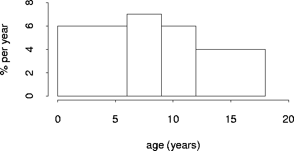

Stat 1040
Practice Midterm 1 Solutions
- This was an observational study, since there was no
way for the investigators to control who went in the various
anger groups.
- Perhaps men are more prone to both anger and
heart disease. The "high anger" group would be disproportionately
men, and thus have a higher heart disease rate. The investigators
should control for gender by comparing the heart disease rate for
the men in the three groups, and separately for the women in the
groups. If the trend (higher anger leads to higher heart disease
rates) still exists, gender alone is not an explanation.
- No. This is an observational study. There might
be confounding factors like gender, or the cause might go the
other direction (people with poor health from heart disease might
tend to be angrier). Association does not imply causation!
- Average = 15.2 hours, median = 17 hours. The outlier
(5) makes the average below all the other values, so the median is
probably the better measure of the center of this data.
- This is an example of the regression effect. (The instructors
made the regression fallacy.)
- -0.9 is closest (strong negative association, and of course
-1.5 is impossible).
- This is an ecological correlation. A regular correlation
would probably be less than 0.78.
- Tobacco average = $6.69, SD = $1.01. r doesn't change, so
remains 0.78.
- 4 is +1 s.u., so about 16% of years would be greater than 4.
- rate = .1066*year -205.5
year 2000: rate = 7.7
- Much more accurate; 2000 is substantial extrapolation.
(2000 is 4.26 in standard units.)
- r.m.s. error: 0.336 cases per 100,000.
-

- 36% + 2*7% = 50%
- Randomize into treatment and control groups. Give control
group placebos. (Others?)
Return to Stat 1040 home page.